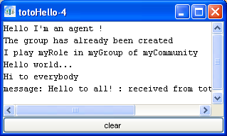

Version 1.0
Abstract
This document describes how to use the designer agent as a wizard to easily build new multiagent software. A MadKit program is a multiagent application which fits into MadKit. Any MadKit programs may therefore be considered as a plugin. Thus, in this context, the words 'project' or 'plugin' will be considered as synonyms.
You may use the word 'MadKit project' instead of plugin if you wish.
Note: This document is not finished. Comments and unfinished parts are surrounded by double brackets. For instance {{link}} means that there is a missing link here.
The designer allows for thecreation new plugins (or projects) for various models, for the creation of agents for these plugins. It is also possible to rebuild a plugin and to change general parameters of the plugins.
Double click on the icon of the designer agent on the MadKit desktop, or select the 'Designer' icon from the MadKit menu.
This will launch an agent which will show all the plugins that may be modified or updated from the designer agent (there are more plugins but they are considered as part of MadKit and it is not possible to modify them through the designer agent).
There are 4 parts in the PluginDesigner gui:
To select a plugin: double select on a plugin icon in the plugin explorer. This will show all the paramaters of the plugin in the documentation panel.
Click on the button "new project". Icon in the toolbar.
This will show a dialog where you enter the plugin name (ex: toto) and the plugin type.
Note: For the moment there is only two types of plugins: the 'default' type which creates a standard project where all agents are threaded and the 'turtlekit' type which builds a new turtlekit project, i.e. a project for the turtlekit platform (see the turtlekit documentation which can be seen either as a long html file or as a .pdf file). More types of plugins will be available in the future.
Then click on the 'create' button and wait for a few seconds. After a while you will receive a set of messages ending by:
Plugin: toto created
This means that you have successfully created a new MadKit project!!
Double click on the new plugin icon that have been created (e.g. the plugin 'toto' in our example). This will show the content of the plugin:
src and build directory which respectively contains the sources (.java files) and the target (.class files) of the plugin.build.xml file which is an 'ant' file used to build the project, generate the jar, etc.. (see the ant site to get more information about the ant build tool which act as a kind of Make in Java).But the project is not 'built' yet. To build it, i.e. to have the plugin ready to be executed, you must click on the 'Build' button. In the output window, you will have something like:
## MadkitLoader: (re)loading F:\madkit\madkit4\sourceforgecvs\madkit\lib\toto.jar adding /F:/madkit/madkit4/sourceforgecvs/madkit/lib/toto.jar to classpath BUILD SUCCESSFUL ## newly (re)loaded class: madkit.toto.totoHello
Now, you will see the newly created agent 'totoHello' in the plugin explorer (note: you may have to close and reopen the toto plugin node in the plugin explorer, to update the explorer.. )
If you double click on the agent, you will see a new 'Hello agent' come to life:
Congratulations: you have been able to start your first agent using the designer!!
It is possible to change the parameters. In the documentation panel, you have three tabs:
1. The 'General' tab contains the general properties of your project (project name, jar name, author name, version number, description, category, directory). it is not possible to modify the project name, the jarname and the directory where the plugin is installed. When you modify the parameters, it is necessary to press the 'Validate' button for these changes to take effect.
2. The 'java build path' contains the set of plugins on which your project depends (actually the set of jars which must be in your classpath to compile your project). A new project comes with the basic plugins which are needed for your project, and this depends of the project type. You may add new plugins if your project needs to, by clicking on the 'Add...' button. This will bring a new dialog which shows the set of already installed plugins. Select the plugins and push the 'Add...' button.
It is also possible to add external jars, i.e. jars that are not associated to the plugins. Caution: the jars must be in the 'lib' directory or one of its subdirectories, to be taken into account by madkit
When you add (or remove) plugins or jars, it is necessary to press the 'Validate' button for these changes to take effect.
3. The 'doc' tab will show the documentation page in a future release...
To modify the sources of the agent, select a java file in a subfolder of the src directory. In our example, select the 'totoHello.java' file located in the 'src/madkit/toto' directory right click on it and a popup menu will appear. Choose 'edit with JSynEdit'. This will open the file in the JSynEdit editor (an editor agent with syntax coloring features). Then you may change the definition of the agent.
Let us suppose that you add the line
println("Hi to everybody");
in the live() method:
public void live()
{
println("Hello world...");
println("Hi to everybody");
broadcastMessage(myCommunity, myGroup, myRole, new StringMessage("Hello to all!"));
while(alive){
Message m = waitNextMessage();
handleMessage(m);
}
}
Save the file with your changes, and click on the 'Build' button (take care that you have selected the right plugin). If there are no compilation errors, MadKit will show in the last lines of output window:
BUILD SUCCESSFUL ## newly (re)loaded class: madkit.toto.totoHello
You may then double click on the 'helloToto' agent icon, which will launch a new totoHello agent with the modifications taken into account:

It is possible to create and add new agents to your project. To add a new Java agent (see below to know how to add new scripted agents), click on the 'new Java agent' button:
A dialog window will appear, where you may define the agent's name and its type (for the moment, only the Standard Java agent work. The other types of agents will be available soon). Clicking on the 'Create' button will add a new file in the source directory which is a clone of a 'hello' agent. You may change the behavior of the newly created agent as you did with the previous agent. Once you have done it, you must click on the 'Build' button to rebuild the project.
Note: if you want this new agent to be part of the .cfg file, you must edit the .cfg yourself (See the MadKit d esktop user guide to know how to describe a configuration file. See also the various .cfg files in the different plugins to get an idea of how it works).
To create scripted agent select one of the following buttons:
This will bring about a new dialog to enter the name and the type of the agent. Clicking on the 'Create' button, will produce a new file with an extension corresponding to the chosen scripting language, in the 'scripts' directory (note: you may have to close and reopen the plugin node in the plugin explorer, to see the scripts directory and the newly created files).
The following figure shows a new Python file called TotoPython.py in the scripts directory, which represents the definition of a Python standard agent.
To create a new agent in a scripted language, you only have to click on the script file. You do not have to click on the build button (the build button is only used to recompile java files. Scripted files are interpreted and thus do not need to be compiled).
The following figure shows a standard python agent, created by the Plugin Designer, in progress: